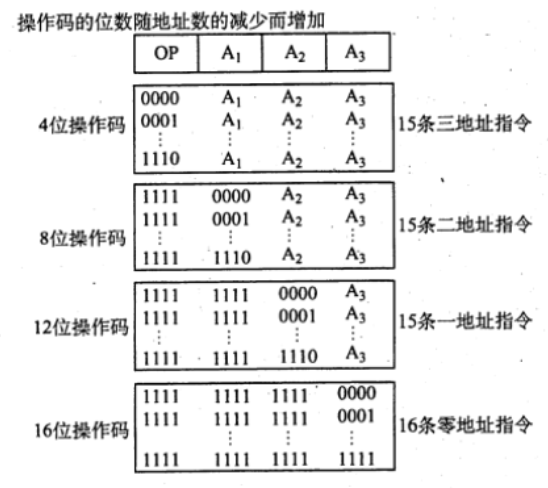

2022.08.23
| 操作码字段 | 地址码字段 |
|---|---|
指令字长和机器字长没有固定关系
单字长指令（指令字长=机器字长），半字长指令（指令字长=1/2 机器字长），双字长指令。
定长指令字结构：所有指令字长相等。反之，变长指令字结构。
零地址指令
| OP |
|---|
零地址的运算类指令仅用在堆栈计算机中。通常参与运算的两个操作数隐含地从栈顶和次栈顶弹出，送到运算器进行运算，运算结果再隐含地压入堆栈。
一地址指令
| OP | A1 |
|---|---|
这种指令也有两种常见的形态，要根据操作码的含义确定究竟是哪一种。
OP(A1)->A1
如操作码含义是加 1、减1、求反、求补等。隐含约定目的地址的双操作数指令，按指令地址 A，可读取源操作数，指令可隐含约定另一个操作数由 ACC（累加器）提供，运算结果也将存放在 ACC中。
指令含义：(ACC)OP(A1)->ACC
若指令字长为32位，操作码占 8位，1个地址码字段占 24位，则指令操作数的直接寻址范围为 $2^{24}= 16M$.
二地址指令
| OP | A1 | A2 |
|---|---|---|
指令含义：(A1)OP(A2)-A1
对于常用的算术和逻辑运算指令，往往要求使用两个操作数，需分别给出目的操作数和源操作数的地址，其中目的操作数地址还用于保存本次的运算结果。
若指令字长为 32 位，操作码占 8位，两个地址码字段各占 12位，则指令操作数的直接寻址范围为$2^{12}=4K$.
| OP | A1 | A2 | A3 |
|---|---|---|---|
指令含义：(A1)OP(A2)->A3
若指令字长为 32 位，操作码占 8位，了个地址码字段各占 8位，则指令操作数的直接寻址范围为 $2^8 = 256$。若地址字段均为主存地址，则完成一条三地址需要 4 次访问存储器（取指令1次，取两个操作数2次，存放结果 1次）。
| OP | A1 | A2 | A3 | A4 |
|---|---|---|---|---|
指令含义：(A1)0P(A2)->A3，A4是下一系将要执行指令的地址。
若指令字长为 32 位，操作码占 8位，4 个地址码字段各占6位，则指令操作数的直接寻址范围为$2^6=64$.
定长操作码指令在指令字的最高位部分分配固定的若干位（定长），表示操作码。一般n位操作码字段的指令系统最大能够表示 2^n 条指令。定长操作码对于简化计算机硬件设计，提高指令译码和识别速度很有利。当计算机字长为 32 位或更长时，这是常规用法
为了在指令字长有限的前提下仍保持比较丰富的指令种类，可采取可变长度操作码，即全部指令的操作码字段的位数不固定，且分散地放在指令字的不同位置上。显然，这将增加指令译码和分析的难度，使控制器的设计复杂化最常见的变长操作码方法是扩展操作码，它使操作码的长度随地址码的减少而增加，不同同地址数的指令可具有不同长度的操作码，从而在满足需要的前提下，有效地缩短指令字长。下图所示即为一种扩展操作码的安排方式。
注意：某段地址变成操作码，不能是全1！全1应被用为扩展操作码！
比如下图A1可以表示0000到1110，但是1111要留作扩展操作码！

数据传送
传送指令通常有寄存器之间的传送（MOV）
从CPU 寄存器写数据到内存单元 (STORE)
算术和逻辑运算
这类指令主要有加（ADD）、减（SUB）、比较（CVP）、乘（MUL）、除(DIV)、加1(INC）、减1（DEC）、与 （AND）、或（OR）、取反 （NOT)、异或 (XOR)
移位指令主要有算法移位、逻辑移位、循环移位等。
转移指令主要有无条件转移（JMP）、条件转移（BRANCH）、调用(CALL）、返回(RET)、陷附（TRAP）等。无系件转移指令在任何情况下都执行转移操作，而条件转移指令仅在特定条件满足时才执行转移操作，转移条件一般是某个标志位的值，或几个标志位的组合。
调用指令和转移指令的区别：执行调用指令时必须保存下一条指令的地址（返回地址），当子程序执行结束时，根据返回地址返回到主程序继续执行；而转移指令则不返回执行。
这类指令用于完成 CPU 与外部设备交换数据或传送控制命令及状态信息。
【答案】：D
【答案】：A
【答案】：D->A。运算型指令寻址的是操作数，而转移型指令寻址的是下次欲执行的指令的地址。
【答案】：D
【答案】：D->C。程序控制类指令主要包括无条件转移、有条件转移、子程序调用和返回指令、循环指令等。中断隐指令是由硬件实现的，并不是指令系统中存在的指令，更不可能属于程序控制类指令。
【答案】：C
【答案】：C
【答案】：C->B。指令的地址个数与指令的长度是否固定没有必然联系，即使是单地址指令也可能由于单地址的寻址方式不同而导致指令长度不同．
【答案】：B
设机器字长为32 位，一个容量为 16MB 的存储器，CPU 按半字寻址，其寻址单元数是 A. 2^24 B. 2^23 C. 2^22 D. 2^21
【答案】：B
某指令系统有200 条指令，对操作码来用固定长度二进制编码，最少需要用（）位。 A. 4 B. 8 C. 16 D. 32
【答案】：B
在指令格式中，采用扩展操作码设计方案的目的是(）。 A.减少指令字长度 B. 增加指令字长度 C. 保持指令宇长度不变而增加指令的数量 D.保持指令字长度不变而增加寻址空间
【答案】：C
一个计算机系统采用32位单字长指令，地址码为 12位，若定义了 250 条二地址指令，则还可以有（）条单地址指令。 A. 4K B. 8K C. 16K D. 24K
【答案】：(256-250)x2^{32-8-12}=6x2^{12}=24K
【2017 统考真题】某计算机按字节编址，指令字长固定且只有两种指令格式，其中三地址指令29条、二地址指令 107条，每个地址字段为6位，则指令字长至少应该是（）. A. 24位 B. 26位 C. 28位 D. 32位
【答案】：
三地址：29->32=2^5
二地址：(32-29)x2^6=64x3>107
指令字长是8的整数倍！5+18=23->24